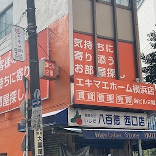
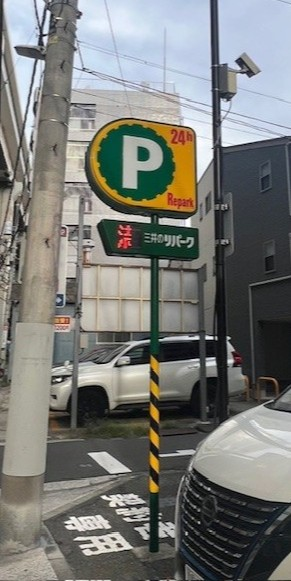
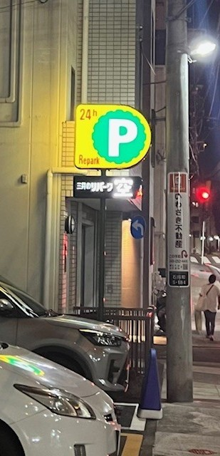

路上観察
テーマ ： 服
《 詳細 》
日時：10月21日(火) 13時〇分～
場所：横浜アンパンマンこどもミュージアム


＜説明＞
横浜駅西口徒歩３分の賃貸仲介専門店。
ビルの２階部分にオレンジと白のシンプルな看板が複数設置されており、店名以外にキャッチコピーが並んでいる。
＜感想＞
オレンジの鮮やかさとシンプルなデザインが自然と目を惹く。
承っている仕事内容やお店の階数、キャッチコピーなどの情報が一目でわかり効率的である。
エキマエホーム横浜店
＜説明＞
横浜駅西口徒歩３分の賃貸仲介専門店。
ビルの２階部分にオレンジと白のシンプルな看板が複数設置されており、店名以外にキャッチコピーが並んでいる。
＜感想＞
オレンジの鮮やかさとシンプルなデザインが自然と目を惹く。
承っている仕事内容やお店の階数、キャッチコピーなどの情報が一目でわかり効率的である。


＜説明＞
三井不動産リアリティが運営する全国展開のコインパーキング。
黄色と緑の背景に24時間の表記とPマークを施したシンプルな看板で設置されている。
＜感想＞
看板が高い位置にあり、大きくPのマークが表記されているため、遠くからでも見つけやすい。
明るく光るデザインであるため、夜間でも簡単に見つけることができる。
三井のリパーク
＜説明＞
三井不動産リアリティが運営する全国展開のコインパーキング。
黄色と緑の背景に24時間の表記とPマークを施したシンプルな看板で設置されている。
＜感想＞
看板が高い位置にあり、大きくPのマークが表記されているため、遠くからでも見つけやすい。
明るく光るデザインであるため、夜間でも簡単に見つけることができる。
振り返り
今回の路上観察を通して、通学路やよく通る道にあるあらゆるものを観察することにより、普段は風景の一環としてなんとなく視界に入っているものが多くあることに気づいた。 また、外出して実際に観察することで、写真や情報だけでは伝わらない現地の印象や雰囲気を感じることができた。